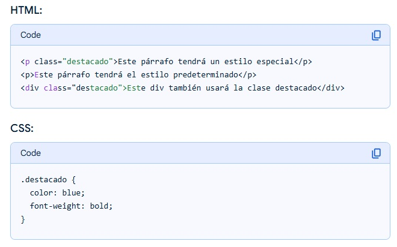
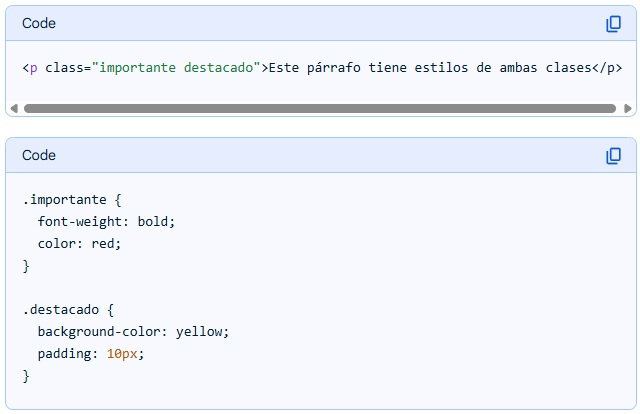

En CSS, los selectores son patrones que identifican los elementos HTML a los que se aplicarán estilos. Son la primera parte de una regla CSS y determinan a qué elementos se aplicarán las propiedades y valores definidos en esa regla. En esencia, los selectores indican al navegador qué elementos de la página web deben ser estilizados.
Selector Universal (*{...})
Se utiliza para seleccionar todos los elementos de la página. El siguiente ejemplo elimina el margen y el relleno de todos los elementos HTML:
*{
margin: 0px;
padding: 0px;
}
No es muy utilizado ya que es difícil que un estilo se aplique a todos los elementos de una página, no obstante, si que se suele combinar con otros selectores y además forma parte de algunos hacks muy utilizados que ya veremos.
Selector de Etiqueta (etiqueta{...})
Selecciona todos los elementos de la página cuya etiqueta HTML coincide con el valor del selector. El siguiente ejemplo selecciona todos los párrafos y pone la fuente en azul:
p{
color: blue;
}
Selector de Clase (.valorclass{...})
El atributo class es básico de todas las etiquetas: <p class="estiloparrafo">. Puede haber varias etiquetas con el mismo valor en el atributo class.

Ejemplo de selector de clase
En este ejemplo, el primer párrafo y el div serán azules y tendrán texto en negrita, ya que comparten la clase "destacado". El segundo párrafo no se verá afectado por el estilo .destacado porque no tiene esa clase asignada.
Al atributo class también se le pueden añadir más de un valor separados por un espacio:

Ejemplo de Selector Multiclase
En este caso, el párrafo se mostrará con texto en negrita y color rojo, además de un fondo amarillo y relleno de 10px.
Ademas podemos combinar los selectores (Selector multiclase) y hacer que esas 2 clases tengan la fuente Verdana.
.importante.destacado{
font-family: Verdana;
}
Selector ID (#valorid{...})
Selecciona un elemento por su id. El valor del id de un elemento tiene que ser único en una página, ya que es como el dni de una etiqueta.
#miid{
font-weight: bold;
}
Selector Mixto
Se pueden combinar los selectores (etiqueta, id y clase) de diferentes maneras:
- *.destacado{...}: Selector universal + clase: En este caso se puede quitar el selector universal porque solo con .destacado ya está seleccionando todos los elementos que tengan esa clase.
- p.destacado{...}: Selector etiqueta + clase: Esto lo que hace es que a todos los p que tengan class="destacado".
- .destacado.importante{...}: Selector clase + clase: Selecciona todos los elementos que en su atributo class contenga estos 2 valores.
- div#miid{...}: Selector de etiqueta + ID.
- #miid.destacado{...}: Selector de id + clase: Esto tendrá más sentido cuando le demos interactividad.
Especificidad
Tenemos que saber cuanto de importante es la especificidad de un selector, porque a la hora de aplicarse la cascada de estilos lo va a tener muy en cuenta.
Selector de atributos básicos
Hay muchas formas de seleccionar elementos con determinados atributos. El más sencillo será etiqueta[atributo], con esto hemos seleccionado cualquier etiqueta que tenga ese atributo, da igual el valor. Ejemplos:
p[class]{...}
Esto selecciona todos los párrafos que tengan el atributo class, da igual el valor que tenga.
p[class="destacado"]{...}
Con esto seleccionamos todos los párrafos que tengan el atributo class y que su valor sea destacado.
p[class="destacado importante"]{...}
Aquí seleccionamos todos los p que en su atributo class esté definido con destacado e importante.
Vale para cualquier tipo de atributo:
*[href]{...}
Con esto seleccionamos todos los elementos que tengan establecido el atributo href.
*[href="www.google.com"]{...}
Con esto seleccionamos todos los elementos que tengan el atributo href y que apunten a google.
Selector de Atributos Avanzados
[nombre_atributo], selecciona los elementos que tienen establecido el atributo llamado nombre_atributo, independientemente de su valor.
[disabled]{
background: grey;
}
Seleccionará todos los elementos que tengan el atributo disabled. Esto puede verse por ejemplo en un formulario.
a[rel="nofollow"]{
background: red;
}
Seleccionamos todos los enlaces que tengan el atributo rel con el valor nofollow.
[nombre_atributo~="happy"] Seleccionamos todos los elementos que tengan el atributo nombre_atributo y que al menos uno de sus valores sea happy.
Seleccionamos todos los elementos que tengan el atributo data-mod y que al menos uno de sus valores sea happy.
[nombre_atributo|="valor"] Selecciona los elementos que tienen establecido el atributo nombre_atributo y cuyo valor es una serie de palabras separadas con guiones, pero que comienza con "valor". Este tipo de selector sólo es útil para los atributos de tipo lang que indican el idioma del contenido del elemento.